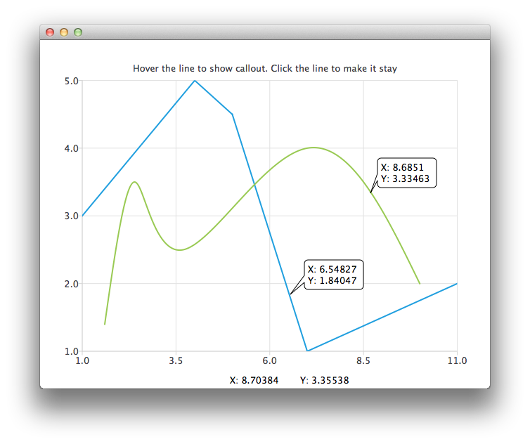

Drawing a Callout on Top of a Chart
Note: This is part of the Charts with Widgets Gallery example.

The QChart class provides two methods that map between the scene coordinates and the series domain (defined by the axes ranges).
QPointF QChart::mapToPosition(const QPointF &value, QAbstractSeries *series)
QPointF QChart::mapToValue(const QPointF &position, QAbstractSeries *series)